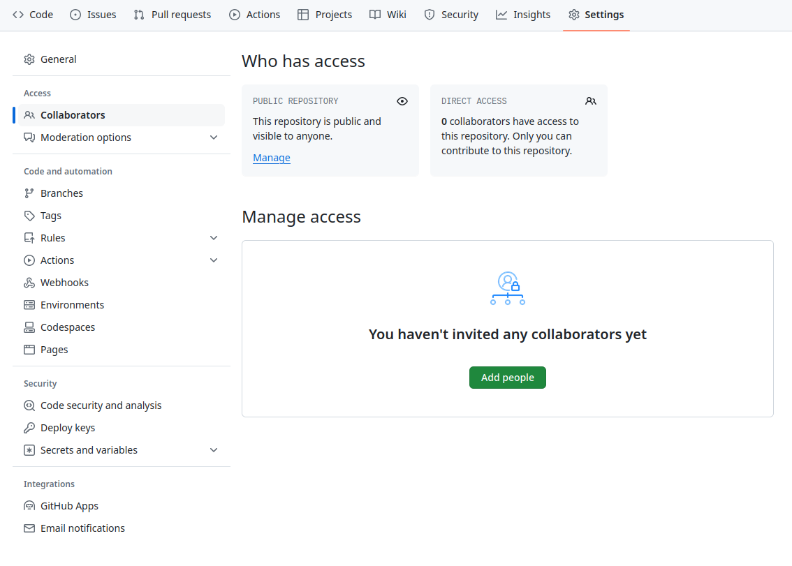

Collaborating
Jose Robledo
04 March 2025
Objectives
- Clone a remote repository.
- Collaborate by pushing to a common repository.
- Describe the basic collaborative workflow.
Questions
- How can I use version control to collaborate with other people?
Exercise
We will work in pairs. One person will be the “Owner” and the other will be the “Collaborator”. The goal is that the Collaborator add changes into the Owner’s repository. We will switch roles at the end, so both persons will play Owner and Collaborator.
If you’re working through this lesson on your own, you can carry on by opening a second terminal window.
The Owner needs to give the Collaborator access. In your repository page on GitHub, click the “Settings” button on the right, select “Collaborators”, click “Add people”, and then enter your partner’s username.

To accept access to the Owner’s repo, the Collaborator needs to go to https://github.com/notifications or check for email notification.
- The Collaborator needs to download a copy of the Owner’s repository to her machine. This is called “cloning a repo”.
Now it looks like this

As a collaborator, make a change in the repository and commit it. For example, you could add a recipe for hummus in a new file.
# Hummus
## Ingredients
* chickpeas
* lemon
* olive oil
* saltThen push the change to the Owner’s repository on GitHub:
Remotes
A remote is a copy of the repository that is hosted somewhere else,
that we can push to and pull from, and there’s
no reason that you have to work with only one. On some large projects
you might have your own copy in your GitHub account (you’d probably call
this origin) and also the main “upstream” project
repository. You would pull from upstream from time to time
to get the latest updates that other people have committed.
git remote -vlists all the remotes that are configured (we already used this in the last episode)git remote add [name] [url]is used to add a new remotegit remote remove [name]removes a remote. Note that it doesn’t affect the remote repository at all - it just removes the link to it from the local repo.git remote set-url [name] [newurl]changes the URL that is associated with the remote. This is useful if it has moved.git remote rename [oldname] [newname]changes the local alias by which a remote is known - its name. For example, one could use this to changeupstreamtoalfred.
Pulling
To download the Collaborator’s changes from GitHub, the Owner now enters:
Fetching
On the command line, the Collaborator can use
git fetch origin main to get the remote changes into the
local repository, but without merging them. Then by running
git diff main origin/main the Collaborator will see the
changes output in the terminal.
Collaborative workflow
In practice, it is good to be sure that you have an updated version
of the repository you are collaborating on, so you should
git pull before making our changes. The basic collaborative
workflow would be:
- update your local repo with
git pull origin main, - make your changes and stage them with
git add, - commit your changes with
git commit -m, and - upload the changes to GitHub with
git push origin main
It is better to make many commits with smaller changes rather than of one commit with massive changes: small commits are easier to read and review.